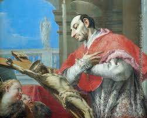

“PREÂMBULO”
Na história da humanidade encontramos
vários personagens para os quais a posteridade concedeu o título de “Grande”.
Todavia São Carlos Borromeo, não recebeu 
Embora tenha tido uma atividade admirável sobre todos os aspectos, como todo ser humano tinha também uma fraqueza, ele era atraído pela vida monástica e contemplativa. No altar do seu humilde e simples coração havia uma linda imagem da SANTÍSSIMA VIRGEM MARIA e outra do SAGRADO E MISERICORDIOSO CORAÇÃO DE JESUS, pelos quais era apaixonado, e se sentia feliz e confortado todas as vezes que rezava ou que realizava algum bem. Mesmo estando descansando num sono reparador, surgia em sua mente as duas imagens Sagradas, e então, sentia como se estivesse num Mosteiro. Por isso chegou a pensar renunciar o seu cargo à frente da Arquidiocese.
Mas seus amigos sinceros o ajudaram e foi o Venerável Frei Bartolomeu dos Mártires, que conseguiu dissuadi-lo daquela idéia. Lembrou-lhe que nascendo de uma família nobre, rica e sendo sobrinho do Papa, deveria continuar a dar o seu exemplo de uma vida pobre, humilde e santa como Arcebispo, naquele século repleto de maus exemplos dados pelo próprio Clero. São Carlos Borromeo viu naquele conselho do seu grande amigo, a Vontade de DEUS e acatou, permanecendo um digno, trabalhador e ardoroso Arcebispo de Milão até a sua morte.
É uma história linda de uma vida muito bonita e enternecedora, exemplo de persistência, de convicção amorosa, de uma alma pura e agradecida a DEUS pelo dom da própria vida.
O APOSTOLADO DOS SAGRADOS CORAÇÕES sintetizando a Vida de São Carlos Borromeo, sente-se feliz em transmitir a todos os corações interessados, o admirável exemplo de um homem; da sua preciosa fé, da sua firme e fiel decisão, da imaculada e perfeita santidade, assim como da sua profunda e sensível caridade, que derramou torrencialmente ao longo da existência servindo a muitos irmãos que necessitavam de auxílio.
“APOSTOLADO DOS SAGRADOS CORAÇÕES”
http://www.apostoladosagradoscoracoes.com